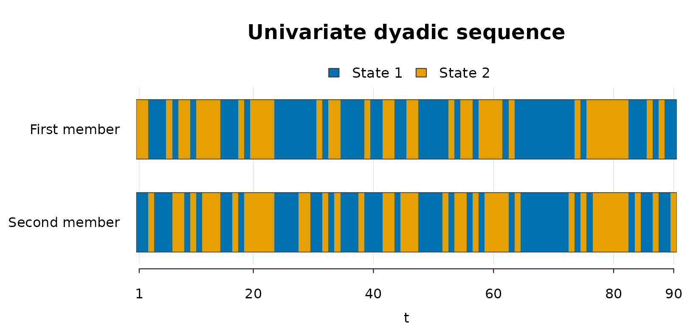

Overview
This vignette shows the univariate workflow implemented in
dyadicMarkov. In the univariate setting, one categorical
variable is observed repeatedly for the two members of a dyad. The
workflow follows the single-case method described in Bollenrücher et al. (2023): empirical transition
counts are computed from the dyadic sequence, transition probabilities
are estimated by maximum likelihood, and restricted actor/partner
structures are compared to identify the pattern of interaction.
The example uses the data set dyadic_univariate_example
included in the package. The data are synthetic and are used only to
illustrate the required input structure and the package workflow.
Although the data are synthetic, the two columns can be read like
real ordered observations from a dyad. For example, FM and
SM could represent two partners, a parent and child, a
therapist and client, or any two interacting members observed at
repeated occasions. The integer states represent coded categories of a
behavior or response. In a binary application, state 1 and
state 2 could represent absence and presence of a coded
behavior, two interaction states, or two response categories defined by
the researcher.
Data
The univariate example contains one categorical variable for the
first member (FM) and the second member (SM)
of a dyad. Each row corresponds to one measurement occasion. In the
first analysis, the sequence of FM, the first member, is
analyzed; SM is the second member or partner.
# Load the example data included with dyadicMarkov
utils::data("dyadic_univariate_example", package = "dyadicMarkov")
head(dyadic_univariate_example)
#> time FM SM
#> 1 1 2 1
#> 2 2 2 1
#> 3 3 1 2
#> 4 4 1 1
#> 5 5 1 1
#> 6 6 2 1
dim(dyadic_univariate_example)
#> [1] 90 3In this example, the categorical states are coded as 1 and 2 for both members.
Empirical transition counts
countEmp() computes the empirical transition counts for
the first member from the two observed dyadic sequences. For
states = 2, the resulting matrix has four rows
corresponding to the possible previous dyadic states \((FM_t, SM_t)\) and two columns
corresponding to the possible next states of the first member, \(FM_{t+1}\). The returned
dyadic_counts object retains ordinary matrix behavior and
provides print(), summary(), and
utils::toLatex() methods. The summary() method
reports information including the matrix dimensions, total count, and
row sums, while utils::toLatex(emp_uni) produces a LaTeX
representation for reports or manuscripts.
emp_uni <- dyadicMarkov::countEmp(
chainFM = dyadic_univariate_example$FM,
chainSM = dyadic_univariate_example$SM,
states = 2L
)
print(emp_uni)
#> next_1 next_2
#> FM1_SM1 26 4
#> FM1_SM2 5 14
#> FM2_SM1 12 5
#> FM2_SM2 7 16
summary(emp_uni)
#> $object_type
#> [1] "empirical transition counts"
#>
#> $object_class
#> [1] "dyadic_counts" "matrix" "array"
#>
#> $storage_mode
#> [1] "integer"
#>
#> $dimensions
#> [1] 4 2
#>
#> $row_names
#> [1] "FM1_SM1" "FM1_SM2" "FM2_SM1" "FM2_SM2"
#>
#> $column_names
#> [1] "next_1" "next_2"
#>
#> $total_count
#> [1] 89
#>
#> $row_sums
#> FM1_SM1 FM1_SM2 FM2_SM1 FM2_SM2
#> 30 19 17 23
#>
#> attr(,"class")
#> [1] "summary_dyadic_counts" "list"Maximum-likelihood transition probabilities
The empirical counts are converted into estimated transition
probabilities with mleEstimation(). For each previous-state
combination that is observed in the data, the corresponding row of
counts is divided by its row total so that the estimated transition
probabilities sum to one.
If a previous-state combination is never observed, its row total is
zero and there is therefore no information in the data from which to
estimate its transition probabilities. In this case,
dyadicMarkov returns equal probabilities for all possible
next states as an implementation convention.
The returned dyadic_mle object retains ordinary matrix
behavior and provides print(), summary(), and
utils::toLatex() methods. The summary() method
reports the matrix structure and row sums, while
utils::toLatex(fit_uni) produces a LaTeX representation of
the estimated transition matrix.
fit_uni <- dyadicMarkov::mleEstimation(emp_uni)
print(fit_uni)
#> next_1 next_2
#> FM1_SM1 0.867 0.133
#> FM1_SM2 0.263 0.737
#> FM2_SM1 0.706 0.294
#> FM2_SM2 0.304 0.696
summary(fit_uni)
#> $object_type
#> [1] "transition probability estimates"
#>
#> $object_class
#> [1] "dyadic_mle" "matrix" "array"
#>
#> $storage_mode
#> [1] "double"
#>
#> $dimensions
#> [1] 4 2
#>
#> $row_names
#> [1] "FM1_SM1" "FM1_SM2" "FM2_SM1" "FM2_SM2"
#>
#> $column_names
#> [1] "next_1" "next_2"
#>
#> $row_sums
#> FM1_SM1 FM1_SM2 FM2_SM1 FM2_SM2
#> 1 1 1 1
#>
#> attr(,"class")
#> [1] "summary_dyadic_mle" "list"Univariate pattern identification
The univariate method uses the A-family matrix codes for its dependence patterns: A1 denotes actor-partner, A2 actor only, and A3 partner only. The pattern nomenclature is summarized in Table 2 of Böllenrücher et al. (in press).
The function univariatePattern() implements the
univariate Likelihood-Ratio Test (LRT) procedure. It compares the
unrestricted actor-partner structure with actor-only and partner-only
restricted structures. dyadicMarkov evaluates these
comparisons using Pearson’s chi-squared statistic, \(X^2 = \sum (O-E)^2/E\). The two test
outcomes are then combined to classify the sequence as actor-partner,
actor only, partner only, or independence.
The returned dyadic_pattern object contains the selected
interaction pattern and the corresponding test results and provides
print(), summary(), and plot()
methods. The printed output gives the selected pattern,
summary() reports the two restriction tests and their
decisions at the specified significance level, and plot()
displays the observed categorical sequences of the two members.
Individual components can also be accessed directly, including
pat_uni$pattern, pat_uni$TEST.AM, and
pat_uni$TEST.PM.
pat_uni <- dyadicMarkov::univariatePattern(
chainFM = dyadic_univariate_example$FM,
chainSM = dyadic_univariate_example$SM,
states = 2L,
alpha = 0.05
)
print(pat_uni)
#> Dyadic interaction pattern
#> Pattern: PM (A3)
#> Alpha: 0.05
#> States: 2
summary(pat_uni)
#> Dyadic interaction pattern summary
#> Pattern: PM (A3)
#> Alpha: 0.05
#> States: 2
#>
#> Likelihood-ratio comparisons evaluated with Pearson Chi-squared
#>
#> Restriction Chi-squared df p-value Decision
#> AM (A2): actor-only restriction 24.6 2 <0.001 Rejected
#> PM (A3): partner-only restriction 1.9 2 0.387 Not rejected
plot(pat_uni)
Interpretation
In this example, the selected pattern is PM (A3). This
indicates that the previous state of the second member is retained in
the restricted structure, whereas the previous state of the first member
is not retained. In the terminology of the univariate method, this
corresponds to a partner-only pattern.
The result should be interpreted as a pattern description for the
analyzed sequence. The function call above analyzes the sequence of
FM, the first member, with SM as the second
member or partner. Reversing the two arguments analyzes the sequence
from the perspective of the second member. Thus, describing both members
of a dyad requires two calls, and each returned pattern is specific to
the analyzed sequence.
pat_uni_reverse <- dyadicMarkov::univariatePattern(
chainFM = dyadic_univariate_example$SM,
chainSM = dyadic_univariate_example$FM,
states = 2L,
alpha = 0.05
)
pat_uni_reverse
#> Dyadic interaction pattern
#> Pattern: PM (A3)
#> Alpha: 0.05
#> States: 2In this example, reversing the two members also returns
PM (A3), but this does not occur in general: each call
describes the pattern of the sequence supplied as the first member,
conditional on the sequence supplied as the second member. For a
complementary approach to visualization and clustering of dyadic
longitudinal sequences, see Bollenrücher et al.
(2024).